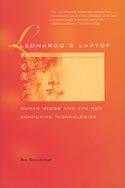

|  |
| About IR |
| Editors |
| Author instructions |
| Copyright |
| Author index |
| Subject index |
| Search |
| Reviews |
| Register |
| Home |
Person vs. agent: views of the computer future
Hayes-Roth, F. & Amor, D. Radical simplicity. Upper Saddle River, NJ: Prentice Hall Professional Technical Reference, 2003
Shneiderman, B. Leonardo's laptop. Cambridge, MA: MIT Press, 2002.
The topic of the two books is the same, the future of computing, but the vision each one depicts is deeply different. The first envisages a world of software agents that autonomously work out our (the users') problems, while the second wishes the computer to abandon the "personal" dimension and become a mean for human relationships. A comparison is particularly interesting since the two perspectives reflect a debate that inflamed the Human-Computer Interaction area in the late 90s (a summary can be found in B. Sheniderman and P. Maes Direct manipulation vs. interface agents, Interactions, 4(6), 42-61
Radical Simplicity is authored by two chief executives at the Hewlett-Packard Company and has been written for technologists and business strategists. Being addressed to a specific target audience has affected the book's style. For example, the language is sometimes very technical and full of acronyms, which are not always explained in the glossary provided. To give the reader an idea here an excerpt from pg. 203:
"These protocols include the standards ones, like Hypertext Transfer Protocol (HTTP), Secure HTTP (HTTPS), File Transfer Protocol (FTP), and Simple Mail Transfer Protocol (SMTP), new transport protocols are about to be established: DIME, HTTPR, and BEEP."
If you have a good basis in computer science you will certainly enjoy the detailed descriptions on how future technology will be implemented at the different computational levels. If, on the contrary, you do not feel confident with acronyms like XML, SOAP, and UDDI, do not worry, just skip some pages without worrying too much: the book indeed contains a set of interesting ideas. The examples in Chapter 2 show how today's tasks will change in the future and let the reader wonder about devices that can automatically connect to each other, adapt their transmission with respect to the current constraints, check if messages have been properly delivered and disseminate information to be found by the right person at the right time in the right place.
For the authors all of this can be done by implementing software agents, programs written at a very high level that are autonomous, communicative, and perceptive:
"...the agent is capable of operating as a standalone process and performing actions without user intervention. It can communicate with the user, other software agents, or other software processes, and is able to perceive and respond to changes in its environment." (p. 211)
Everyone sees the advantage of delegating work and it is obvious that there are tasks, like negotiating the best bandwidth for video transmission, that no user is keen to do by him or herself. Another area where agents can be of help is in monitoring and assuring that a procedure is followed as planned, e.g., workflow automation.
Less reassuring (for me) are the speculations on software agents able to understand users' desires and intentions and acting autonomously to satisfy those. The authors briefly discuss the crucial point of trust: delegation is based on the trust that the agent will do the assigned job properly, and if a mistake occurs the effect will be marginal. Indeed, in my opinion, a full discussion on trust and responsibility is missing in the book, which favours a definitively positivist view of agent technology. The very first page of the book sketches a day in 2010 where "your personal assistant agent" autonomously collects and assembles information to satisfy your boss's requests, organizes a conference call for you, and orders your shopping, taking into account that you are on diet. Think of the worst case: the agent not only fails to order your food, but also collected wrong information that negatively affects your career: who is responsible for that? Whom did you trust? You The agent? The company that built it? The programmer?
Sure software agent technology is evolving rapidly and it might be that, in ten years time, my fears will dissolve. For now, I lsuggest that you read the Wall Street Journal article of the 26 November 2002 by Jefferey Zaslow entitled, "If TiVo thinks you are gay here's how to set it straight", which describes the misadventures of users trying to rectify agents' beliefs.
Leonardo's Laptop contains Ben Shneiderman dreams. He is well known in the HCI community for his work on formalizing the direct manipulation paradigm in the early 80s, the paradigm that still underpins today's graphical interfaces. The core idea in this book is that computers should support users not only in creating and manipulating objects, but should support higher levels of human activities and relationships. Shneiderman identifies fou levels of activities: collect, relate, create, and donate. Collect information is the first step; sources may be as different as family or friend, and institutions. Relate nicely maps the concept of communication, while create is the creative step of producing something. Donate can be interpreted as both distributing and disseminating your work.
These activities are combined with f different levels of relationships among humans. Shneiderman distinguishes self, family and friends, colleagues and neighbours, and citizen and markets, depending on the number of people involved. Relations and activities can be profitably organized in a table (Activities and Relationship Table, ART), which links each activity with each relationship. This table is used in the book to analyse how today tasks can be changed in the type of support the users have and the global benefit to the community. Four detailed scenarios explore this spreading out from user to social: e-learning, e-business, e-healthcare, and e-government. Each scenario is described with a broad perspective in mind and with an admirable level of detail. For example the discussion on e-healthcare is not limited to showing the advantage of storing the health history of people for both patient and physician, but also envisages possible resistance from doctors in devolving information that, historically, have been only their concern.
As an advocate of direct manipulation Ben Shneiderman has found also the time to criticize the idea of intelligent interfaces and agents, and to discuss the natural superiority of visualization techniques to enable people in doing a better job.
It is always interesting to read other people's dreams, however Shneiderman's do not fly too high, but are well reflected in today's practice. From a person of his level I would have expected a more visionary perspective.
Another criticism is the set of examples chosen, always rooted in the USA culture and therefore often cryptic for a non-USA reader. Despite a full section devoted to Universal Usability this book is not universally understandable. This is difficult to accept considering the knowledgeable author and the fact that information about different countries is available to everybody today through the Web.
Finally, despite the fascinating idea, the parallel between Shneiderman's proposals and Leonardo's tools that motivate the book title is sometimes strained.
Daniela Petrelli
University of Sheffield
13 October 2003
How to cite this review
Petrelli, D. (2003) Person vs. agent: views of the computer future. Review of: Hayes-Roth, F. & Amor, D. Radical simplicity. Upper Saddle River, NJ: Prentice Hall, 2003 and Shneiderman, B. Leonardo's laptop. Cambridge, MA: MIT Press, 2002. Information Research, 9(1), review no. R114 [Available at: http://informationr.net/ir/reviews/revs114.html]